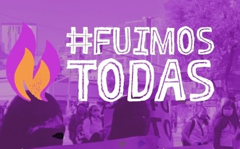

Desde finales del siglo XX, Rheingold, Castells y Keane vieron en internet la posibilidad de una democracia más empoderada e incluyente. Dos décadas después, la gobernanza de plataformas se convirtió en tema central del debate político.
Pero la acción colectiva digital sigue siendo más mito que realidad medida. ¿Qué pasa realmente cuando la ciudadanía participa en línea?
Argentina, Chile, Colombia, Cuba, México, Perú y Uruguay. Seleccionadas desde la base de datos LATINNO con criterios de diversidad geográfica, variación en sus aproximaciones a problemas sociales y uso de mecanismos de crowdsourcing con evidencia de innovación.
El objetivo: capturar la diversidad de prácticas participativas digitales entre 2023 y 2025, no producir inferencias generalizables.
Los crowd-civic systems pueden operar como mecanismos genuinos de incidencia o como espacios que simulan escucha sin alterar la distribución del poder.
La pregunta que guía el análisis: ¿qué tipo de democracia promueve cada plataforma realmente?
La taxonomía de Poblet et al. (2019) basada en Stokes (2002) distingue cuatro tradiciones democráticas: liberal (participación vía voto informado), republicano (defensa del bien común y control político), de desarrollo (participación en todos los ámbitos sociales) y deliberativo/epistémico (conversación para producir conocimiento colectivo).
Cada plataforma fue caracterizada desde la exploración sistemática de interfaces y funcionalidades, complementada con revisión de documentación institucional, informes de implementación y literatura académica.
Enfoque cualitativo-exploratorio: comprensión en profundidad sobre generalización estadística.
Las plataformas analizadas no encajan en un solo modelo democrático. Son infraestructuras participativas flexibles que median entre ciudadanos, organizaciones sociales e instituciones, adaptándose a la complejidad sociopolítica de cada contexto.
9 de las 12 plataformas tienen características republicanas. Data Uruguay crea tecnología cívica para promover el conocimiento y el ejercicio de derechos. Ciudatos reúne más de 100.000 datos sobre 130 indicadores de calidad de vida en 15 ciudades colombianas, permitiendo cruces de variables y comparaciones en acceso libre.
Proyecto Inventario desde Cuba: periodismo de precisión con bases de datos descargables diseñadas para medios independientes que operan con acceso intermitente a internet.
Tenemos Que Hablar Chile/Colombia recoge ideas e inconformidades de los grupos sociales para levantar información y construir consensos desde las bases hasta los tomadores de decisiones. Asuntos del Sur, presente en 29 países, ha capacitado a más de 7.200 agentes de innovación que impulsaron 436 proyectos de incidencia local.
La mayoría de plataformas deliberativas no operan solas: se articulan con vigilancia ciudadana y rendición de cuentas del modelo republicano.
Ciudadanía Inteligente comenzó en Chile monitoreando candidatos y evolucionó hacia herramientas en 14 países. Patagonia Action Works conecta ciudadanos con organizaciones ambientales mediante donaciones, firmas y voluntariado. Agua para tod@s articula dispositivos online y offline para garantizar el acceso al agua en México.
Las plataformas de desarrollo frecuentemente desbordan los marcos institucionales, articulándose con movimientos sociales y agendas de transformación estructural.
MOE (Misión de Observación Electoral) fomenta la participación en procesos democráticos, realiza monitoreo y observación de elecciones y capacita en derechos políticos. Mi Rumbo busca visibilizar el presupuesto participativo en la Ciudad de México y permite enviar propuestas, votar proyectos y monitorear su ejecución.
Las plataformas republicanas tienden a operar dentro de marcos institucionales existentes. Las deliberativas van un paso más allá: buscan no solo informar sino transformar la agenda pública a través del diálogo. Ciudadanía Inteligente combina los cuatro modelos simultáneamente según el proyecto que desarrolla.
La veeduría necesita deliberación para interpretar los datos. La deliberación necesita datos para sustentar sus propuestas.
Casi ninguna plataforma encaja en una sola categoría. El examen de los casos muestra que las categorías rara vez aparecen de manera aislada — las plataformas revelan una tendencia a la superposición de funciones participativas donde transparencia, vigilancia, deliberación y acción colectiva se articulan en configuraciones híbridas.
Mientras las plataformas liberales y republicanas tienden a operar dentro de marcos institucionales existentes, las de desarrollo y deliberativas frecuentemente los desbordan, articulándose con movimientos sociales.

Este artículo deriva del proyecto "Plataformas y redes sociales humanas: una iniciativa de formación en crowdsourcing desde las organizaciones de la sociedad civil y medios de comunicación independientes para superar la pobreza en Colombia", financiado en el marco de la III Convocatoria Interna para Proyectos de Investigación, Desarrollo e Innovación de la Alianza 4U (N.º de Solicitud: 12), 2025–2026.
Investigadores principales: Néstor Julián Restrepo Echavarría (Universidad EAFIT) y Andrea Cancino Borbón (Universidad del Norte).
Eso es exactamente lo que debería hacer un buen paper.